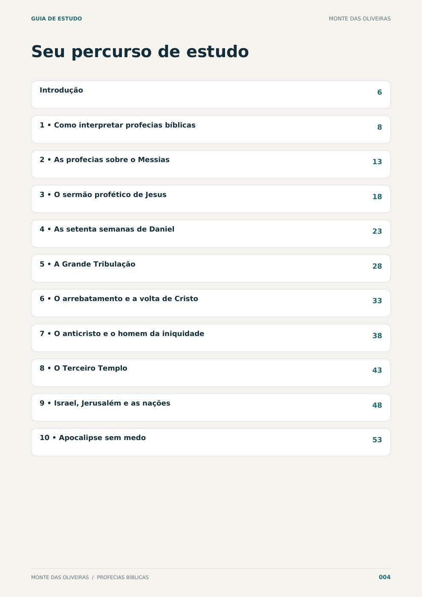
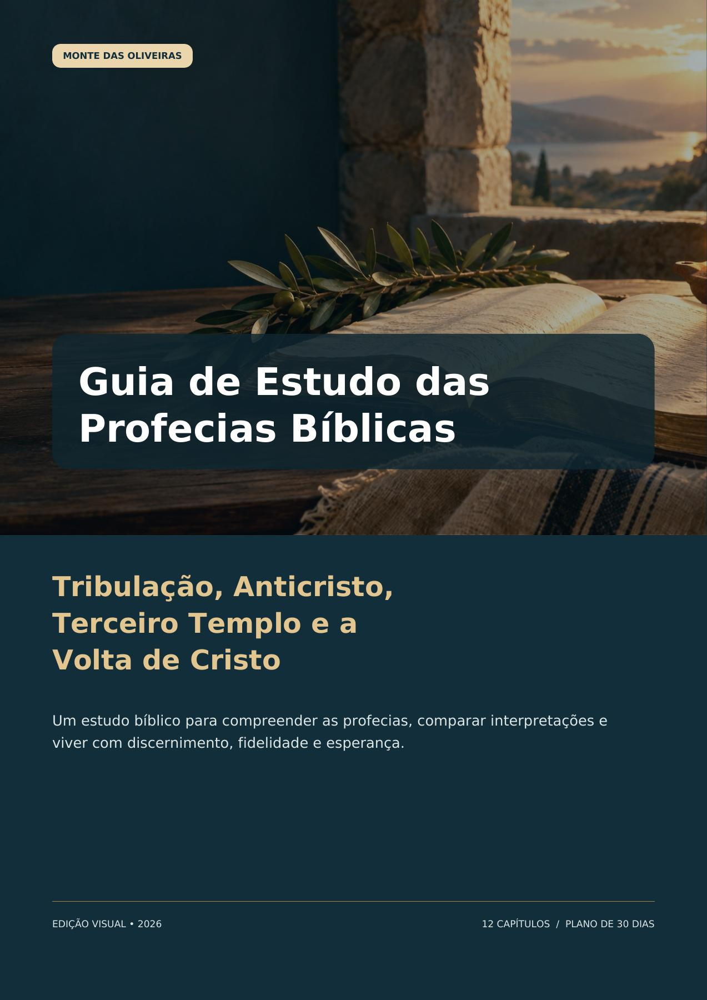

A tribulação e seus contextos
Como ler as passagens e reconhecer as principais diferenças de interpretação.
Um guia em PDF para estudar tribulação, Anticristo, terceiro templo e a volta de Cristo com contexto, equilíbrio e esperança.
Conhecer o guia por R$ 29,90

Estudo bíblico com discernimento. Sem marcar datas.
Veja o material por dentroO que a Bíblia afirma? Onde começam as interpretações? Como estudar as profecias sem transformar cada notícia em uma certeza sobre o fim?
Este guia ajuda você a organizar essas perguntas e a construir uma leitura mais cuidadosa, mesmo sem formação teológica.
Observe o cenário histórico, o gênero literário e a ligação entre as passagens.
Conheça diferentes interpretações e os pontos em que cristãos divergem.
Uma abordagem que evita datas, alarmismo e especulações sobre pessoas atuais.
Um material para consultar, anotar e revisitar. Mantenha sua Bíblia por perto durante a leitura.
Como ler as passagens e reconhecer as principais diferenças de interpretação.
O tema à luz dos textos bíblicos, sem apontar pessoas atuais como cumprimento definitivo.
O lugar desse assunto nas leituras proféticas e os cuidados com especulações.
A esperança cristã e o chamado à vigilância, sem marcar datas.
Uma apresentação das principais leituras sobre arrebatamento, tribulação e milênio.
Perguntas, glossário e um plano de estudo para organizar sua caminhada.
Confira uma prévia do PDF: sumário, estudo e plano de leitura. Toque em uma página para ampliar.
O guia inclui um plano de 30 dias para ajudar você a criar uma rotina de estudo.
Para cristãos que querem entender melhor as profecias e sentem falta de uma explicação organizada e acessível.
Para quem deseja comparar interpretações com respeito e separar o texto bíblico das opiniões que circulam nas redes.
Você não precisa conhecer todos os termos. O estudo é um processo, e o guia foi pensado para acompanhar esse caminho.
Ver o que está incluídoGuia de Estudo das Profecias Bíblicas: Tribulação, Anticristo, Terceiro Templo e a Volta de Cristo.
E-book em PDF · Pagamento único
As vendas ainda não estão disponíveis nesta página. O link de pagamento será disponibilizado aqui.
Não. A proposta é apresentar os temas em linguagem acessível, com referências bíblicas e explicações que ajudam a acompanhar o estudo.
Não. Este é um e-book em PDF, para leitura digital. As informações de entrega serão apresentadas no checkout quando as vendas estiverem disponíveis.
Não. A abordagem evita datas, sensacionalismo e a identificação de pessoas atuais como o Anticristo.
O guia apresenta as principais visões cristãs e procura distinguir o que o texto afirma, as interpretações teológicas e as aplicações práticas.
Não. Ele é um apoio ao estudo. Use as referências para ler as passagens na sua Bíblia e leve suas dúvidas à sua comunidade cristã.
A página está em preparação. Assim que o pagamento estiver conectado, o botão da oferta levará ao checkout com as condições de compra.